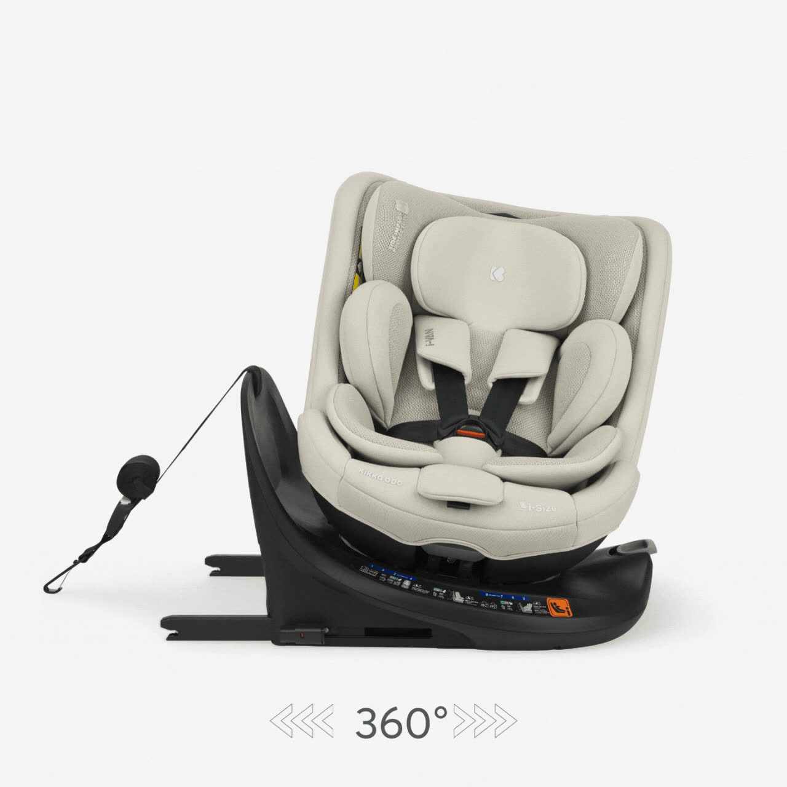
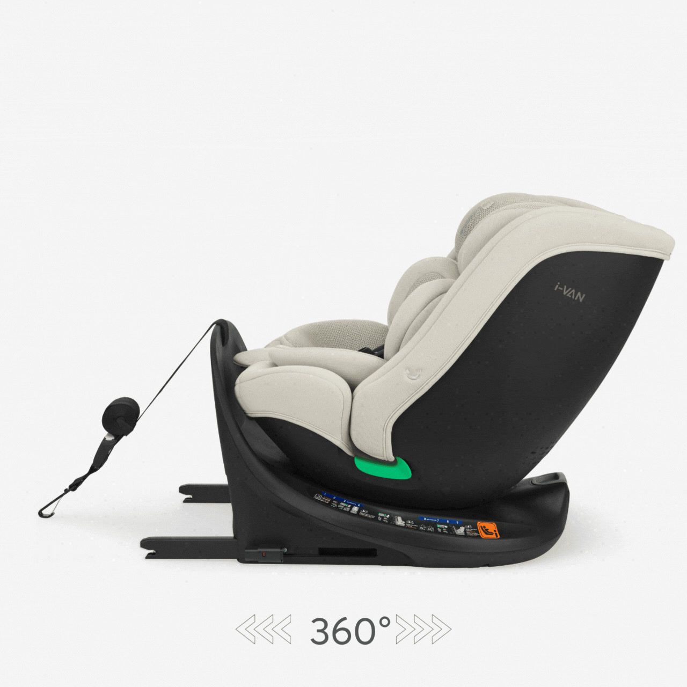
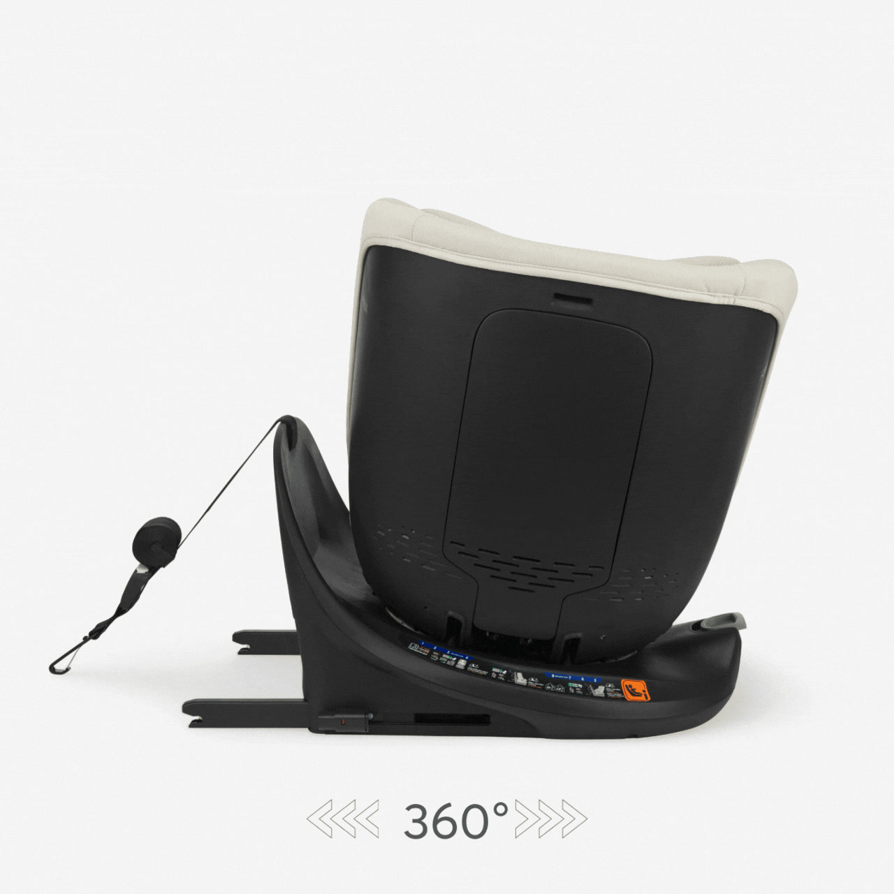
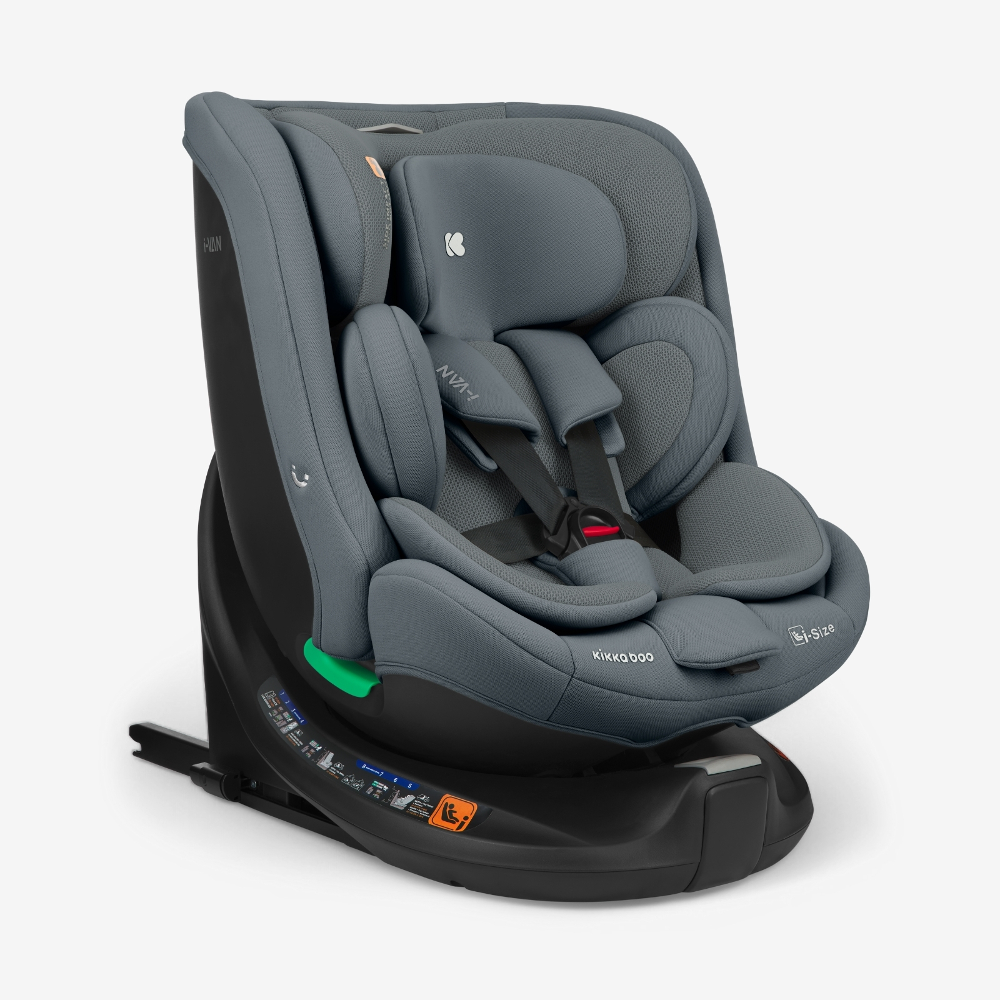
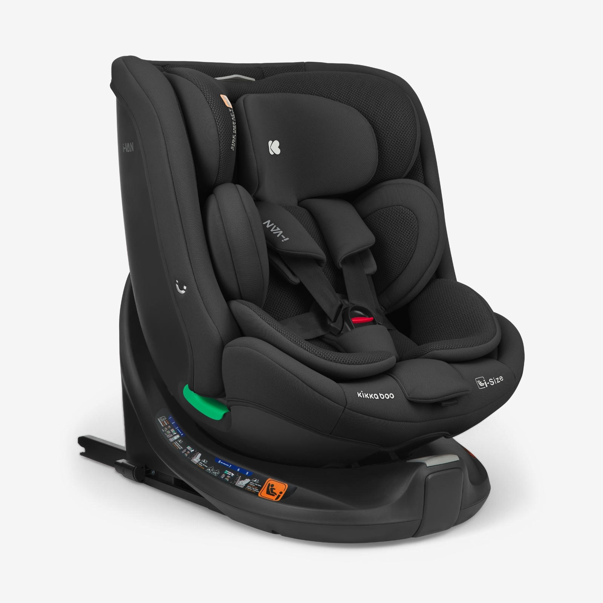

מתקינים כיסא בטיחות לראשונה?
שני שלבים. שלוש בדיקות ירוקות.
STEP 01

01 · חיבור לבסיס ISOFIX
שתי זרועות — שני סימנים ירוקים
STEP 02

02 · Top Tether — עד הירוק
מתחו עד שהסימן הופך לירוק
KIKKABOO
3 ירוקים. יוצאים לדרך.


I-VAN · i-Size · 40–150 ס״מ · 3 צבעים · 360°
בטיחות מותנית בהתקנה על פי הוראות היצרן